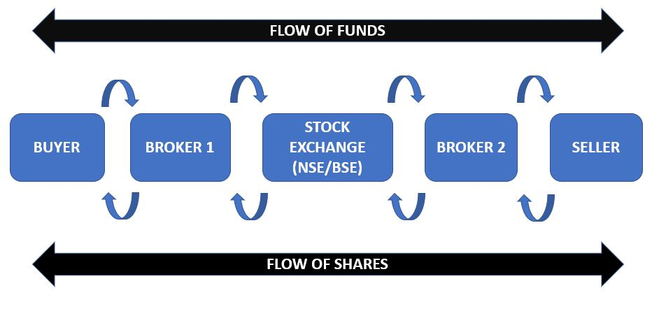

<!DOCTYPE html>
<html lang="en">
<head>
    <meta charset="UTF-8">
    <meta name="viewport" content="width=device-width, initial-scale=1.0">
    <link rel="stylesheet" href="style.css">
    <link rel="stylesheet" href="https://cdnjs.cloudflare.com/ajax/libs/font-awesome/5.15.4/css/all.min.css">
    <link rel="stylesheet" href="https://cdn.jsdelivr.net/npm/@fortawesome/fontawesome-free@6.4.2/css/fontawesome.min.css">
    <link rel="stylesheet" href="https://cdn.jsdelivr.net/npm/bootstrap@4.3.1/dist/css/bootstrap.min.css" integrity="sha384-ggOyR0iXCbMQv3Xipma34MD+dH/1fQ784/j6cY/iJTQUOhcWr7x9JvoRxT2MZw1T" crossorigin="anonymous"> 
    <script src="https://code.jquery.com/jquery-3.3.1.slim.min.js" integrity="sha384-q8i/X+965DzO0rT7abK41JStQIAqVgRVzpbzo5smXKp4YfRvH+8abtTE1Pi6jizo" crossorigin="anonymous"></script>
    <script src="https://cdn.jsdelivr.net/npm/bootstrap@4.3.1/dist/js/bootstrap.min.js" integrity="sha384-JjSmVgyd0p3pXB1rRibZUAYoIIy6OrQ6VrjIEaFf/nJGzIxFDsf4x0xIM+B07jRM" crossorigin="anonymous"></script>
    <title>Intermidiate Level</title>
    <style>
      /* level 2 */
.intro-text {
  text-align: justify;
  padding-left:  80px; /* Adjust the padding as needed */
  padding-right: 80px;
}

/* Responsive styles */
@media only screen and (max-width: 768px) {
  .intro-text {
    padding: 10px; /* Adjust the padding for smaller screens */
  }
}
.intro{
  padding-left:  40px; /* Adjust the padding as needed */
  padding-right: 40px;
}

    </style>
</head>
<body>


<!-- Banner section -->
<section id="banner">
 <!-- introduction -->
 <section >

  <h1 class="intro"> Level 2</h1><br>

  <h5 class="intro-text">
  In Level 2 of Stock Academy, we'll dive into how the stock market actually works and how you can make money from stocks. We'll cover basic questions beginners often ask, like the difference between trading and investing. By the end, you'll have a clear understanding of how to navigate the stock market and make informed decisions about your investments.
  </h5><br><br><br><br>
</section>

  <div class="container">
    <div class="row">
      <div class="col-md-6">
        <p class="promo-title-myth1" style="font-weight: bold; font-size: 24px;">How The Stock Market Works?</p>
        <p><ol>
          <li>Companies want to raise more money.</li>
          <li>They decide to sell parts of themselves ("Shares") to do so</li>
          <li>These shares are sold on the stock market</li>
          <li>Members of the public (investors) buy + sell these shares.</li>
          <li>The company receives the money it needs to grow.
          </li>
        </ol></p>
        <br><br>

        <p class="promo-title-myth1" style="font-weight: bold; font-size: 24px;">How to Profit from Stocks?</p>
        <p style=" font-size: 16px;">You can profit from stocks in 3 different ways. Let's look into them in detail.</p>
        <p  style="font-weight: bold; font-size: 18px;">Rising stock prices</p>
        <p style=" font-size: 16px;">The first way to generate a profit from stocks is a price rise. If you purchase a stock 
          today and the price goes up tomorrow, you can sell it for some quick profit.
          For example, if you purchased one Amazon share for $2k and the price went to 
          $2,300, you can sell that share for a $300 profit. This is called generating a capital 
          gain</p>

          <p  style="font-weight: bold; font-size: 18px;">Dividends</p>
          <p style=" font-size: 16px;">The second way to make a profit from stocks is through dividends. Well-established 
            companies usually share their profits with investors. If you own shares of a company 
            that pays dividends, you will be rewarded with a fraction of their profits every year.<br>
            McDonald's is just one example of such companies. In 2020, they paid investors 
            $5.05 per share in dividends. Compared to the stock price at the time, you would generate approximately 5% profit on your investment annually from dividends alone.
            
          </p>

          <p  style="font-weight: bold; font-size: 18px;">Falling stock prices</p>
          <p style=" font-size: 16px;">The third way to make a profit from stocks is if their price is falling. Falling prices can 
            generate profits if you know how to use Contracts For Difference (CFDs) and open 
            "short" positions.<br>
            CFDs are financial instruments that allow traders and investors to profit from price 
            moves in both directions. A long position will benefit from a price rise, while a short 
            position will be profitable if the price goes down.<br>
            If you open a short CFD position and the price moves downward even for a small percentage, you can close that position for a profit at any time.

            
          </p>

          <p class="promo-title-myth1" style="font-weight: bold; font-size: 24px;">Regulated Stock Brokers</p>
          <p><ol>
            <a href="https://www.angleone.in" style=" color: black;" target="_blank"><li>ANGEL BROKING LIMITED</li></a>
            <a href="https://www.zerodha.com" style=" color: black;" target="_blank"><li>ZERODHA BROKING LIMITED</li></a>
            <a href="https://www.zaubacorp.com/company/RKSV-SECURITIES-INDIA-PRIVATE-LIMITED/U74900DL2009PTC189166" style=" color: black;" target="_blank"><li>RKSV SECURITIES INDIA PRIVATE LIMITED</li></a>
            <a href="https://tradebrains.in/list-sebi-registered-stockbrokers-india/" style=" color: black;" target="_blank"><li>See more examples</li></a>
          </ol></p>
          <br><br>
  
          <p class="promo-title-myth1" style="font-weight: bold; font-size: 24px;">Trading vs Investing</p>
          <p style=" font-size: 16px;">Many people do not know the difference between investing and trading. It may seem 
            that these two terms are representing the same thing but there are very distinct differences. The table below shows exactly how these two strategies differ</p>
            <p  style="font-weight: bold; font-size: 18px;">Investing in stocks</p>
            <p style=" font-size: 16px;">Serious investors usually play the long game with stocks. The end goal is to acquire 
              as many shares as possible over the course of a few years or even decades.
              Long-term investors will probably not sell when the price is going up and will also 
              probably accumulate more during periods of underperformance. They have very clear 
              goals and they do not deviate from them based on price movements alone</p>
    
              <p  style="font-weight: bold; font-size: 18px;">Trading stocks</p>
              <p style=" font-size: 16px;">Stock traders have a very different mindset. They usually aim for short-term profits 
                rather than long-term accumulation. Traders don't hold on to their stocks for too long. 
                Sometimes they will buy and sell a stock in a matter of hours if that seems like a profitable move. Instead of looking into the long-term plans of a company, traders will 
                look for news and updates that may move the price up or down in the coming hours, 
                days, or weeks</p>

            <br><br>


      </div>
      <div class="col-md-6 text-center">
          
        </div>
    </div>  
</div>
</section>

</body>
</html>
